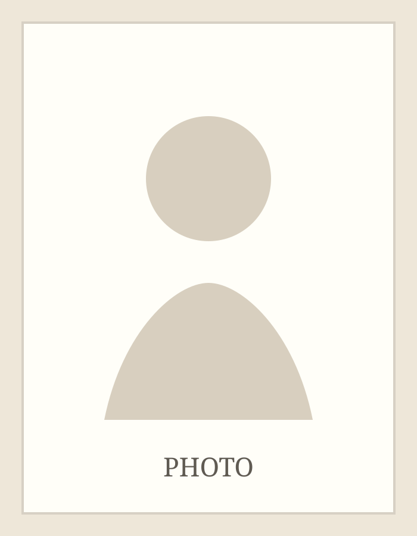

profile.jpg 并替换这里的路径即可。About
张扬帆，海德堡大学日本研究方向博士生。研究兴趣包括战后日本思想史、丸山真男研究、思想史方法、帝国知识与冷战思想网络。
Research Interests
- Postwar Japanese intellectual and political thought
- Maruyama Masao and the narration of “postwar thought”
- Empire, knowledge, and intellectual history
- Cold War liberalism and East Asian intellectual networks
Contact
Email: zzmuyi0728@gmail.com